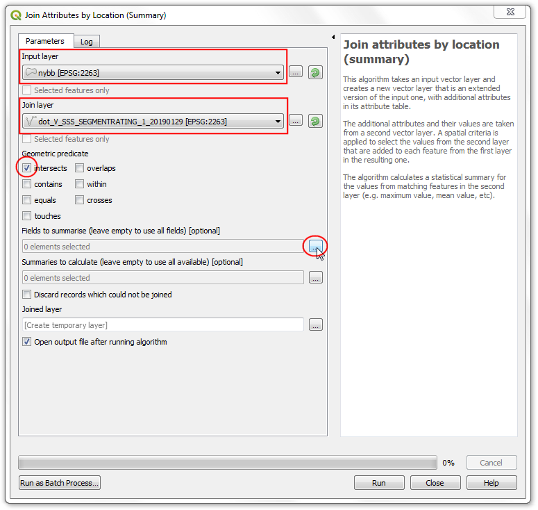
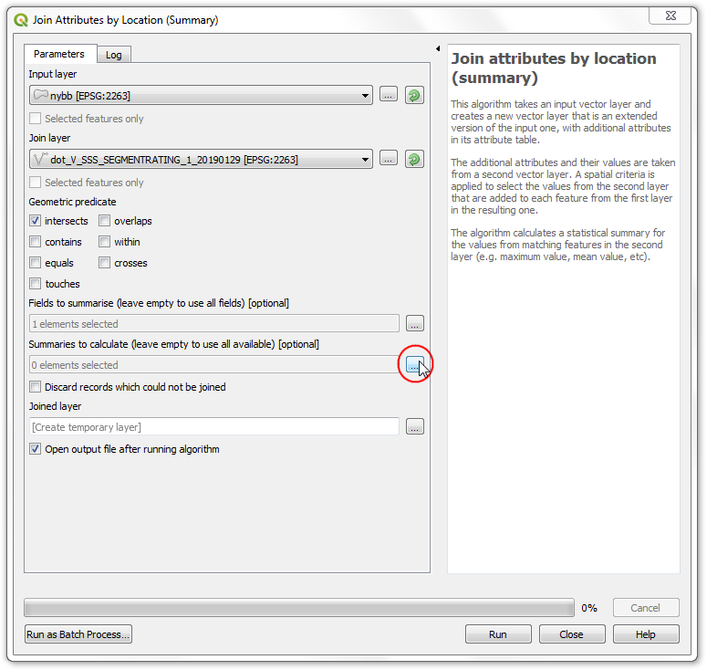

Ujaval Gandhi
Ujaval GandhiRuimtelijke samenvoegingen uitvoeren (QGIS3)¶
Ruimtelijk samenvoegen is een klassiek probleem in GIS - verplaatsen van attributen uit de ene laag naar een andere, gebaseerd op hun ruimtelijke relatie. In QGIS is deze functionaliteit beschikbaar via het algoritme Koppel attributen op basis van plaats voor Processing.
Overzicht van de taak¶
We zullen 2 lagen gebruiken - Een shapefile van de grenzen van boroughs in New York en een ander shapefile van Street Pavement Ratings voor alle straten in New York. De eerste taak zal zijn om de gemiddelde beoordeling te vinden van straten in elke borough met een ruimtelijke samenvoeging met een samenvatting van het algoritme. De tweede taak zal zijn om de naam van de borough toe te voegen aan de objecten straat door middel van een één-tot-veel ruimtelijke samenvoeging.
Andere vaardigheden die u zult leren¶
Filters maken om tijdelijk bepaalde objecten van berekeningen uit te sluiten.
De gegevens ophalen¶
NYC Open Data Portal is een uitmuntende bron voor gratis gegevens van New York.
Download het zip-bestand Borough Boundaries met behulp van de optie Export van het portaal.

Download het zip-bestand`Street Pavement Rating <https://data.cityofnewyork.us/Transportation/Street-Pavement-Rating/2cav-chmn>`_ met behulp van de optie Export van het portaal.

Voor het gemak kunt u direct een kopie van de gegevensset downloaden vanaf de links hieronder:
Gegevensbron [CITYOFNY]
Procedure¶
Zoek in de QGIS Browser naar het bestand
nybb_19a.zipen vergroot het. Selecteer de laagnybb_19a/nybb.shpen sleep die naar het kaartvenster. Deze laag bevat polygonen die de grenzen van de borough’s in de stad New York weergeven.

Zoek vervolgens naar het bestand
V_SSS_SEGMENTRATING_1.zipen vergroot het. Selecteer de laagdot_V_SSS_SEGMENTRATING_1_20190129.shpen voeg die toe aan het kaartvenster. Dit is een lijnlaag van alle straten in de stad.

Laten we de beschikbare attributen voor elk object van de laag
dot_V_SSS_SEGMENTRATING_1_20190129eens nader bekijken. Klik met rechts en selecteer Attributentabel openen.

U zult het attribuut, genaamd
Rating_B, zien dat waarden heeft in het bereik 0-10 en de beoordeling van de segmenten van de straat weergeeft. Het attribuutRatingWordheeft een beschrijvende beoordeling. We kunnen het veldRating_Bgebruiken om de gemiddelde beoordeling te berekenen.

Het kan u zijn opgevallen dat enkele objecten een beoordeling hebben van
NR. Dat zijn de segmenten die niet werden beoordeeld. Het zou niet juist zijn om ze op te nemen in onze analyse. Laten we een Filter instellen om deze records uit te sluiten vóórdat we de ruimtelijke samenvoeging doen. Klik met rechts op de laagdot_V_SSS_SEGMENTRATING_1_20190129en selecteer Filteren.

Typ de volgende expressie in de Querybouwer om alle records te selecteren die niet zijn beoordeeld met
NR. U kunt de expressie ook interactief opbouwen door te klikken op Veld, Operator en de van toepassing zijnde Waarde te selecteren. Klik op OK.
"RatingWord" != 'NR'
U zult nu zien dat de laag
dot_V_SSS_SEGMENTRATING_1_20190129nu een pictogram voor een filter heeft dat aangeeft dat er een actief filter is toegepast op deze laag. Ga naar .

Zoek en lokaliseer het algoritme . Dubbelklik erop om het te openen.

Selecteer, in het dialoogvenster Koppel attributen op basis van plaats (samenvatting),
nybbals de Invoerlaag. De laag met stratendot_V_SSS_SEGMENTRATING_1_20190129zal de Koppellaag zijn. U kunt het Geometrisch gezegde laten staan op de standaardkruist met. Klik op de knop … naast Velden die moeten worden samengevat.

Notitie
Een tip om u tehelpen de juiste lagen voor invoer en koppelen te selecteren: De invoerlaag is die welke zal worden aangepast met nieuwe attributen in de ruimtelijke samenvoeging. Omdat we willen dat het veld van de gemiddelde beoordeling wordt toegevoegd aan de laag met borough’s, zal het de invoerlaag zijn.
Selecteer
Rating_Ben klik op OK.

Klik, op dezelfde wijze, op de knop … naast Te berekenen samenvattingen.

Selecteer
meanals de operator voor de samenvatting en klik op OK. Nu zijn we klaar om de verwerking te beginnen. Klik op Uitvoeren.

Het algoritme voor Processing zal zich door de objecten werken en de ruimtelijke samenvoeging toepassen. Verifieer dat de taak voor de verwerking met succes werd uitgevoerd en klik op Close.

Terug in het hoofdvenster van QGIS zult u zien dat een nieuwe laag
Samengevoegde laagis toegevoegd aan het kaartvenster. Open de attributentabel voor deze laag. U zult zien dat een nieuwe kolomRating_B_meanis toegevoegd aan de invoerlaag voor de borough’s met de gemiddelde beoordeling van alle straten die kruisen met dat object.

Nu kunnen we een omgekeerde bewerking uitvoeren. Soms vereist uw analyse het verkrijgen van attributen uit een andere laag, gebaseerd op de ruimtelijke relatie maar zonder een samenvatting te berekenen. We kunnen het algoritme
Koppel attributen op basis van plaatsgebruiken voor een dergelijke analyse. De taak is om de naam van de borough toe te voegen aan elk object in de laag met de straten, gebaseerd op met welke polygoon van een borough het kruist. Laten we, vóórdat we dit algoritme uitvoeren, het filter verwijderen van de laagdot_V_SSS_SEGMENTRATING_1_20190129. Klik op het pictogram van het filter en druk op de knop Leegmaken in de Querybouwer. Klik op OK.

Schakel de laag
Samengevoegde laaguit in het paneel Lagen. Zoek naar het algoritme in de Toolbox van Processing en dubbelklik erop om het te starten.

Selecteer
dot_V_SSS_SEGMENTRATING_1_20190129als de Invoerlaag ennybbals de Koppellaag. U kunt Geometrisch gezegde laten staan op de standaardkruist met. Klik op de knop … naast Velden die moeten worden toegevoegd en selecteerBoroName. Klik op OK.

Het lijnsegment zou een grens van een borough kunnen overschrijden dus kiezen we bij Verbindingsstijl voor
Afzonderlijk object maken voor elk gelokaliseerd object (één-tot-veel). Klik op Uitvoeren.

Open, als de verwerking eenmaal is voltooid, de attributentabel van de nieuwe toegevoegde
Samengevoegde laag. U zult zien dat er een nieuw attribuutBoroNameis toegevoegd aan elk object straat.

If you want to give feedback or share your experience with this tutorial, please comment below. (requires GitHub account)